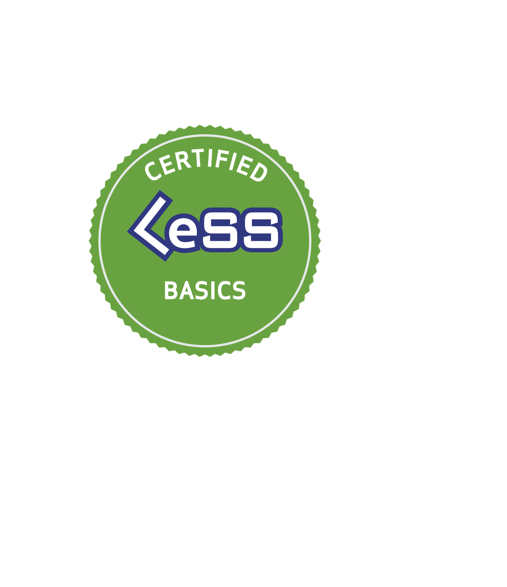

Large-Scale Scrum -
Grundlagen Schulung
Learnen Sie, wie Sie Ihre Organisation schlanker und
damit agiler und anpassungsfähiger machen.
Learnen Sie, wie Sie Ihre Organisation schlanker und
damit agiler und anpassungsfähiger machen.
Hintergrund
Das schnellere Erschaffen von Kundenwert und Innovationen in immer schnelleren Zykluszeiten ist zum Hauptunterscheidungsmerkmal zwischen guten und erfolgreichen Unternehmen geworden. Um diese dringend notwendige Geschwindigkeit zu erreichen, wenden sich Organisationen immer öfter agilen Prinzipien zu. Diese Prinzipien wurden aber für kleine Unternehmen ohne Abhängigkeiten entworfen, was die Umsetzung in vielen Organisationen nur schleppend vorankommen lässt.
Das stellt große Produktentwicklungsorganisation vor wichtige Fragen:
Wie erreicht man die Geschwindigkeit und Agilität von Start-Ups in großen Organisationen?
Wie sieht die Organisationsstruktur einer agilen Organisation aus?
Wie kann ich meine Organisation anpassen um langfristig erfolgreich zu sein?
Large-Scale Scrum (LeSS) ist für Unternehmen das, was Scrum für Teams ist: ein einfaches, leistungsstarkes, Produktentwicklungs-Rahmenwerk, das sich fortlaufend weiterentwickeln lässt, so dass es in jeden einzigartigen Kontext passt. LeSS baut auf Scrum-Prinzipien wie Empirie und funktionsübergreifende selbstverwaltenden Teams auf und bietet einen Rahmen, um diese in großem Maßstab anzuwenden. Das Rahmenwerk bietet einfache strukturelle Regeln und Richtlinien, wie Scrum in der Entwicklung großer Produkte angewendet werden kann.
Lernziele

Die Prinzipien hinter LeSS verstehen.

Die LeSS Rollen und ihre Bedeutung aufzeigen können.

Erklären, inwiefern LeSS ein Scrum-basierter Ansatz ist um Agilität zu skalieren.

Erläutern, wie LeSS über ca. 8 Teams skaliert werden kann..

Die Dynamik und die Unterschiede zwischen Komponenten- und Feature-Teams erklären können.
Zusammenfassen, welche Auswirkungen eine LeSS Einführung auf die Organisationsgestaltung hat.
Verstehen, wie Ihr aktuelles Organisationsdesign die Agilität Ihrer Organisation beeinflusst.

Wissen, ob und wie Ihre Organisation von der Implementierung von LeSS profitieren kann.
Was ist das Besondere an diesem Kurs?
Dieser Kurs wurde von Grund auf für eine Online-Schulung konzipiert. Es werden Techniken aus "Training from the BACK of the Room" von Sharon Bowman und "Learning How to Learn" von Barbara Oakley, PhD verwendet, um den Stoff effektiv zu vermitteln. Durch die Aufnahme von Informationen auf eine multisensorische Art und Weise (Hören, Sehen, Diskutieren, Schreiben, Reflektieren) und das aktive Anwenden des Erlernten sind Sie in der Lage die Informationen direkt nach dem Kurs zu benutzen. Am Ende des Kurses werden Sie Aktionspläne für die Anwendung Ihres neuen Wissens in Ihrer Organisation erstellen.
Der Kurs ist auf 10 Teilnehmer beschränkt, um ein intensives Engagement und Lernen zu ermöglichen.
Der Kurs besteht aus sechs 60-90 Minuten Sitzungen, die sich über 3 Tage verteilen. Alle Teilnehmer müssen sich aktiv an den Sitzungen über die Online-Tools und Webcam beteiligen, um die CLB-Zertifizierung zu erhalten.

100% interaktiv
Max. 10 Teilnehmer
Kurze Sitzungen. Mehrere Tage
Kurszeiten

Mittwoch, 22. April
14:00 - 15:30 CET
•
16:00 - 17:00 CET
Donnerstag, 23. April
14:00 - 15:30 CET
•
16:00 - 17:30 CET
Freitag, 24. April
14:00 - 15:30 CET
•
16:00 - 17:00 CET
Zertifizierung

Certified LeSS Basics Zertifikat

Zugang zu vielen LeSS Unterlagen
8 Scrum Education Units

Am Ende des Kurses erhalten Sie die CLB-Zertifizierung und ein Konto auf less.works. Außerdem werden Sie mit den wichtigsten Lernressourcen von less.works vertraut gemacht, einschließlich der Abschnitte: Warum LeSS?, Einführung in LeSS, die Regeln, die Kapitel zu den Online-Videos und Büchern.
Darüberhinaus können Sie nach dem Besuch der 6 Sitzungen bis zu 8 SEUs (Scrum Education Units) der Kategorie C für die Scrum Alliance CSP (Certified Scrum Professional) in Anspruch nehmen.
An wen richtet sich der Kurs?
Dieser Kurs ist für jeden geeignet, der mit der Entwicklung von Produkten und/oder agilen Organisationen zu tun hat: Scrum-Master und agiles Fachpersonal, Team- und Organisations-Coaches, Manager und Führungskräfte, Product Owner und Stakeholder, Software-Ingenieure, und andere.
Agenda
Die folgenden Themen werden in diesem Kurs behandelt:
Warum LeSS
LeSS und Scrum (was haben sie gemeinsam und was sind die Unterschiede)
Komponenten-Teams vs. Feature-Teams
Die Rollen in LeSS
Die LeSS Events
Die LeSS Prinzipien
LeSS Huge
Voraussetzungen

Vorhandenes Scrum Wissen
Stable Internetverbindung
Eine Webcam
Die einzige Voraussetzung für den Kurs sind grundlegende Scrum-Kenntnisse. Dieses kann durch den Besuch eines Certified Scrum Master oder eines Professional Scrum Master Kurses oder durch die gründliche Lektüre von Scrum-Einführungsmaterial wie dem Scrum Primer und das (aus)Üben von Scrum erreicht werden.
Sie benötigen eine stabile und schnelle Internetverbindung, eine Webcam, ein Headset und eine Umgebung, in der Sie sich konzentrieren und bei Bedarf auch mit anderen online interagieren können.
Empfohlene Vorbereitung
Die Teilnehmer sollten Scrum-Einführungsmaterialien wie zb. den Scrum Primer(nochmal) durchsehen. Eine weitere großartige Vorbereitung für diesen Kurs ist der Scrum Test auf less.works. Es wird dringend empfohlen, diesen Test vor der Teilnahme am Kurs durchzuführen um die Lernerfahrung zu maximieren.
Über den Trainer
Robert ist einer von 20 zertifizierten LeSS-Trainer weltweit und einer der wenigen mit praktischer Erfahrung in LeSS und LeSS Huge. Als agiler Berater und Coach hat er in den letzten 20 Jahren mit über 30 Unternehmen zusammengearbeitet, darunter DAX-notierte Weltmarken wie Adidas, BMW, BP, Dr. Oetker, Henkel, Hilti, Hugo Boss, SAP, Volkswagen und ZF.
Von 2015 bis 2016 leitete er eine LeSS-Einführung bei einem Global Player in der Software Industry, und skalierte dabei die Entwicklung von 3 auf 7 Teams und coachte das Entwicklungs- und das Managementteam beim führen einer skalierten agilen Organisation. Im Jahr 2018 trug er, bei einer der weltweit größten LeSS Huge Einführungen bei der BMW AG, zu signifikanten Verbesserungen in der Produktentwicklung und -auslieferung bei. In der Zusammenarbeit mit über 30 Teams und über 400 Mitarbeitern, führte er sie dazu, alle zwei Wochen Produktinkremente bestehend aus Hardware und Software zu liefern.
Mehr erfahren